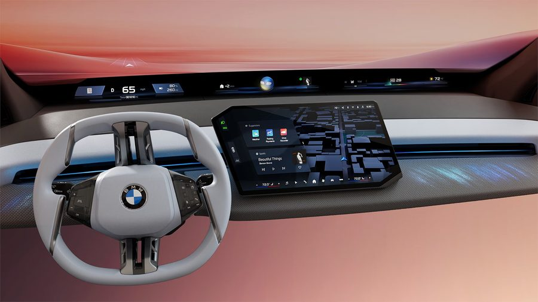

×

I led the UX for a next-generation in-car radio HMI on a global automotive platform, focusing on a component-based architecture that could scale consistently across markets with different technical standards, regulations and listening behaviours.
Over 8 months, I drove three key initiatives end-to-end, defining behaviour, interaction patterns and design documentation for a legally mandated Public Value indicator, a redesigned Manual Tuner and a market-adaptive Settings structure.
Note: Some details have been abstracted due to NDA constraints.
One radio system. Multiple markets, formats and legal requirements. Every pattern had to flex regionally while staying coherent globally.
Existing users had established patterns. Every decision balanced innovation against continuity.
Regulations vary by market. One new requirement landed mid-project — the architecture had to absorb change without breaking what already existed.
Technical boundaries shaped every decision - from information architecture to microinteractions.
Drivers use radio while driving. Fast, predictable interactions weren't just a UX principle - they were a safety requirement.
One component system. Multiple markets, data types, and legal requirements. The approach: evolve legacy behaviours while adapting to every regional variation, without compromising driver safety.
Usage-led - The Manual Tuner was underused. Integrated into the dominant full-screen player based on prior generation data.
Market rules - A single matrix controlled conditional rendering across regions — reducing duplication and making legal compliance predictable.
Stable layouts - Dynamic elements anchored to static ones to prevent distracting layout shifts.
Edge coverage - Graceful fallbacks for missing data, empty states, and cross-market edge cases.
Rather than designing separate solutions per market, I mapped every variation upfront into a single requirements matrix - defining exactly which elements appeared where.
| Feature | World | Germany | USA | Japan |
|---|---|---|---|---|
| Station name | ● Yes | ● Yes | ● Yes | ● Yes |
| Frequency shown | ● No | ● No | ● Yes | ● Yes |
| FM/AM/DAB band indicator | ● Yes – unified list | ● Yes – unified list | ● No – separate lists | ● No – separate lists |
| HD Radio indicator | ● No | ● No | ● When digital only | ● No |
| Public Value (PV) indicator | ● No | ● Yes – legal requirement | ● No | ● No |

Mid-project, a new legal requirement arrived with no prior benchmarks: publicly funded stations must be marked only within German territory. The designation changes dynamically - and disappears completely when crossing borders.
Three design decisions followed:
Progressive disclosure - Lists and widgets show "PV" only. The player and settings expand to "Public Value" + icon where space and attention allow.
Layout stability - The PV icon was anchored left of the always-present frequency. When crossing borders, PV disappears, but the layout stays stable, no distracting jumps.
Edge case - Sorting by PV in regions with no qualifying stations shows "No Public Value stations available" followed by the full list.

The Manual Tuner was a stakeholder requirement - legacy system commitments demanded it stayed. But data told a different story: users spent 90% of their time in the full-screen player, and manual tuning had very low usage in the previous generation.
The solution: bring the Manual Tuner into the player instead of burying it in a separate screen. One tap swaps playback controls for tuning controls via subtle animation - zero navigation, full metadata visible.
Stakeholders were concerned users wouldn't know when they were in tuning mode versus playback. I addressed this through:
The icon confirms the mode change at a glance.
"Manual Tuner" replaces the station name, making the mode unambiguous.
Only visible in this mode, reinforcing context.
Non-distractive, but clear enough to signal the state change.
For seeking, I aligned interaction patterns with competitor vehicles to ensure instant familiarity.

The Settings screen accommodates different combinations of options per market while staying clean and comprehensible. The main challenge was sorting logic and the edge cases it created.
| Market | Sorting Options | Details |
|---|---|---|
| USA / Japan | None | HD Radio, Show AM |
| Rest of World | Alphabetical / Frequency | Radio Info, Show AM |
| Germany | Alphabetical / Frequency / Public Value | Radio Info, Show AM |
Frequency sort order - DAB stations come first (by block, then alphabetically), followed by FM/AM.
Empty states - When no Public Value stations exist, a clear message appears followed by the full list — no blank screens.
Region-specific details - Show AM, HD Radio and Radio Info appear only where relevant.
Edge case coverage - Consistent handling across all combinations prevents unexpected empty or broken states.
Metadata from radio stations is not guaranteed. Stations may send a full set of information, partial information or nothing at all. We controlled the display logic, not the data source.
I defined a cascade of fallback rules across two independent dimensions - image and text - ensuring the component always had something meaningful to show and avoiding empty states.

In automotive UX, dedicated usability testing isn't always feasible. This project had no simulator access due to timeline constraints — validation relied on industry standards instead: HMI guidelines, ISO safety compliance, and reviews with Functional Owners and engineering.
If time and resources allowed, the next steps would be:
Driving simulator tests — cognitive load, glanceability, and interaction speed under realistic conditions.
Independent HMI heuristic evaluation — with a focus on the Manual Tuner mode transition.
This redesign delivered a production-ready radio player balancing legacy features, market variations, and data challenges within automotive constraints.
01
When usage data conflicts with stakeholder requirements, relocate features to high-traffic areas rather than removing them.
02
Map market variations into tables for clarity, then build systematic fallbacks. No empty screens - ever.
03
Documenting decisions throughout forces clearer thinking about edge cases, trade-offs and validation alternatives.
Back to Work
Case Studies →